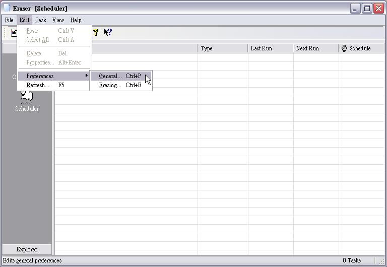
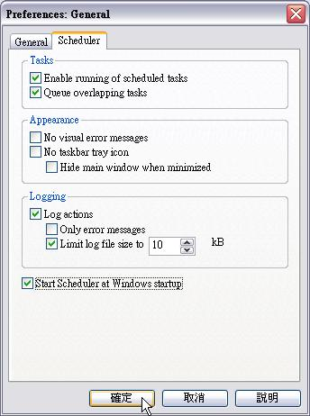
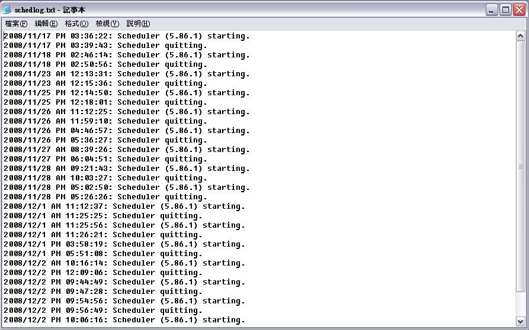
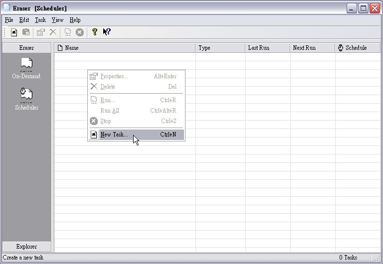
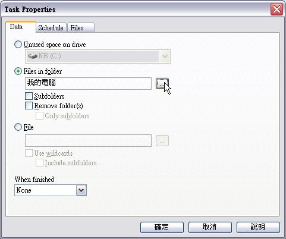
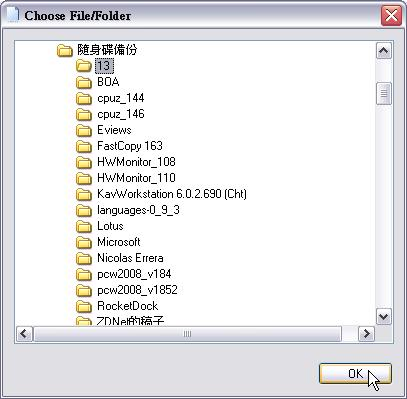
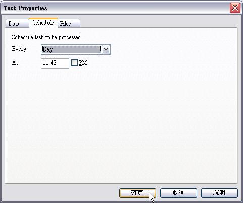
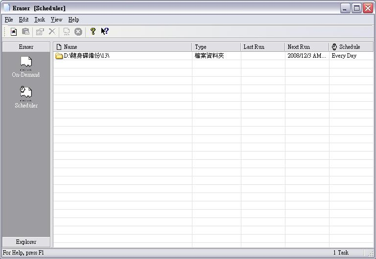
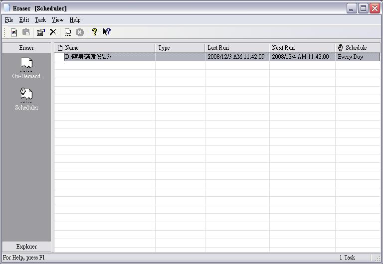
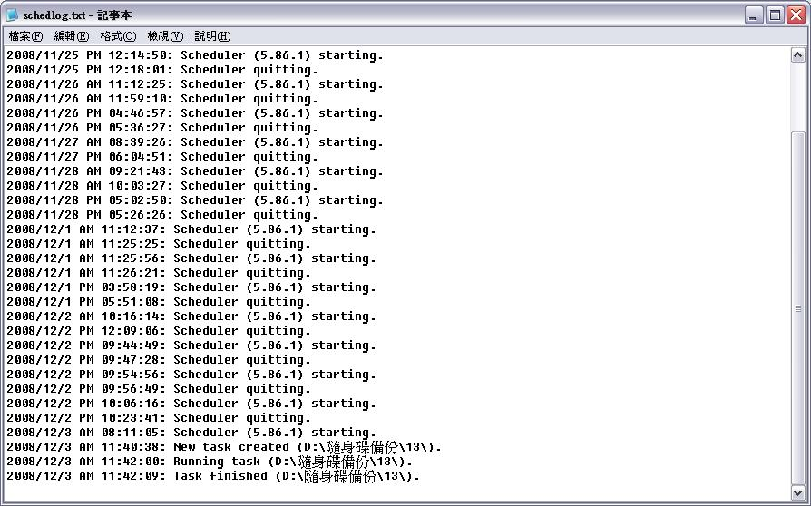

也紀念我們永遠的朋友 李士傑先生（Shih-Chieh Ilya Li）。
把檔案抹除乾淨的Eraser （下）
使用Scheduler（排程功能）的注意事項和設定
Scheduler，當然就是讓電腦在人沒空使用電腦時，自行按照預定的時間表和抹除方式進行檔案或磁碟抹除工作。它的相關操作很簡單，和 On-Demand 很相似，不過有幾點是不一樣的。首先，開始抹除時，不會出現確認視窗。既然排定好未來的行程，表示人「應該」不在電腦前，那 Eraser 要跟誰確認呢？如果還需要確認，就不需要使用Scheduler啦！
所以，要丟進排程的檔案或資料夾，一定要先確認清楚這些檔案或資料夾，到時候必定要抹除掉，否則老話一句，後悔了想救回來，拜天跪地也是沒有用的！
其次，使用 Scheduler 來進行抹除，並不會在抹除後產生抹除結果報告讓使用者檢視，如果想要檢視相關抹除的內容，可以讓 Scheduler 自行產生 Log 檔（日誌檔），之後再從 Log 檔來檢視相關內容。
另外，如果預定排程執行的時間夠長，不妨使用較安全的抹除方式，讓敏感的機密檔案徹底的消失！
既然Scheduler和On-Demand有些許不同，我們一樣先瞭解相關設定，才能針對個人的需要加以設定。（抹除方式的選擇和前文都一樣，這裡不再贅述）
步驟一

開啟Eraser後，按功能表的的Edit＼Preference＼General（一般）。
步驟二

切換到 Scheduler 標籤，在 Tasks 的欄位中，如果沒有勾選 Queue Overlapping tasks（依序執行重疊任務），那麼排程任務在特定情況下，有可能會同時執行抹除。例如早上九點要進行一個任務，結果執行到九點半還沒結束，預定在九點半執行的第二個任務照樣會準時執行，如此就會讓電腦的執行效能減低（如果排的多，後果真的會不堪設想）。勾選 Queue Overlapping tasks，就不會發生這種情形。
而中間的 Appearance（顯示）欄位，則是要設定最小化時，是否要在 Windows 右下角的通知區顯示圖示。預設值啟動 Windows 就會開啟 Scheduler，在通知區內也會顯示相關圖示。
第三個欄位就是設定 Log 檔，可以設定為只紀錄錯誤訊息（Only error messages），或限定 Log 檔的大小。
最底下的項目，就是要不要讓 Windows 一開啟後，就啟動 Scheduler。若沒有排程的需求，建議可以取消勾選，減少一個常駐程式來消耗系統資源。
全部設定完，按一下「確定」就可以了。
那，想要檢視 Log 檔該怎麼辦呢？很簡單，按照下面的步驟，很簡單就可以做到了。
步驟一
按功能表的 File（檔案）＼View Log（檢視日誌檔）
步驟二

此時會以記事本開啟 Log 檔（Log 檔採用的格式是 TXT，也就是純文字檔）。
排程功能的使用方法
步驟一

開啟 Eraser，在左邊的欄位內點選 Scheduler，然後在右邊的欄位上按滑鼠右鍵，點選 New Task。（大家也可以在工具列上按New Task按鈕）
步驟二

如果選擇的是 Files in folder，又是常態性的排程，那就不要勾選 Remove folder(s)，否則第二次執行時，Eraser 會找不到資料夾而無法進行。
接著按右邊的按鈕，好選取要進行抹除的資料夾。
〔補充說明〕
在Files標籤內可以選擇該次抹除任務想要的抹除方式，其選擇方法和前文同。
步驟三

選擇想要的資料夾後，按一下OK。
步驟四

接著切換到 Schedule 標籤，設定要執行的時間。可以設定的是每天、每週一、二、三、四、五、六、日或每次重開機（Reboot）。
下面則是設定時間，如果沒有勾選 PM（下午），就表示所設定的是 AM（上午）。
步驟五

加入完畢後，在 Last Run（上一次執行）的欄位會是空的（因為還沒開始執行呀！），只要時間到，就會在背景默默的執行。如果資料夾內的檔案大又多，加上抹除的方式又是比較耗時間的，那可能會覺得系統變慢了；如果不是，可能沒有什麼感覺。
步驟六

抹除完畢後，Last Run 會出現真正開始執行的時間，這時候我們可以確定資料夾內的檔案已經被抹除乾淨了。
步驟七

按照前面的方法開啟Log檔，我們可以看到剛剛這個排程任務執行的狀況。
在現今網路發達的時代，檔案的流傳非常快速，用在工作和分享上，固然很方便，但是相對的，不想要外流的檔案，不小心也會快速的到處流傳，而且想要真的把網路上流竄的這些外洩檔案，全清除的一乾二淨，那真的是件不可能的事。所以，只要是應該徹底消失的檔案，記得一定要「做掉」喔！這時候，可別忘了 Eraser 這個方便有效的工具！
You may be interested in the following articles:
- 把檔案抹除乾淨的Eraser （上） - 2008-12-10
Address：No.128, Sec.2, Academia Rd., Institute of Information Science, Academia Sinica, Nangang District, Taipei City 11529, Taiwan (R.O.C).
Privacy Policy. Terms-of-use